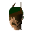

McGrubor's Wood
Location at 2647, 3480 · Kingdom of Kandarin
Open on the world map → Open in knowledge graph → Below: McGrubor's Wood (underground)
NPCs
| NPC | Level | Spawns | Notable drops |
|---|---|---|---|
| 44 | 9 | ||
 Forester | 4 |
Open on the world map → Open in knowledge graph → Below: McGrubor's Wood (underground)
| NPC | Level | Spawns | Notable drops |
|---|---|---|---|
| 44 | 9 | ||
 Forester | 4 |